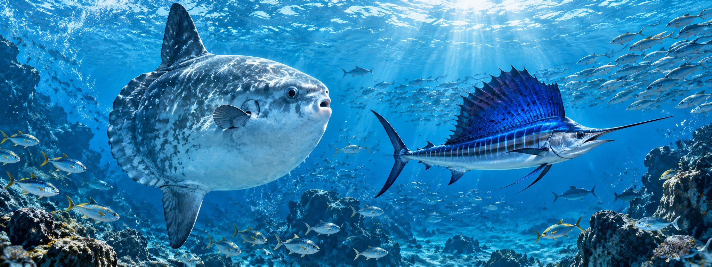

Isotopes · Tagging · Marine Ecology
Tracing the journeys and trophic ecology of marine animals in a changing ocean.
About the Lab
The IsoTag Lab studies the migration patterns, trophic ecology, and nutrient use of marine animals, particularly in pelagic and coastal ecosystems.
We combine isotope analysis — bulk stable isotopes, compound-specific isotope analysis of amino acids (CSIA-AA), isoscapes, and Bayesian mixing models — with electronic tagging techniques. Our goal is to understand how these ecological patterns change with environmental variability.

Ching-Tsun (Joyce) Chang, Ph.D. (張景淳)
Assistant Professor
Department of Oceanography, College of Marine Sciences
National Sun Yat-sen University, Kaohsiung, Taiwan
chingtsunchang@mail.nsysu.edu.tw
Latest News
- LabThe IsoTag Lab is established in the Department of Oceanography at NSYSU.
- Join usWe are recruiting graduate students. Learn more